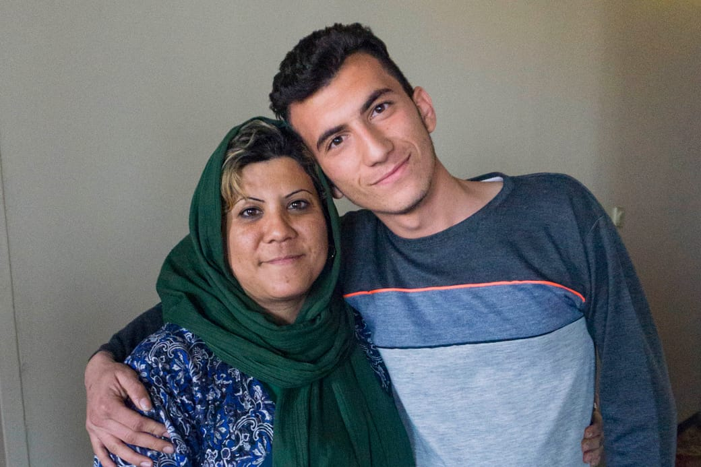
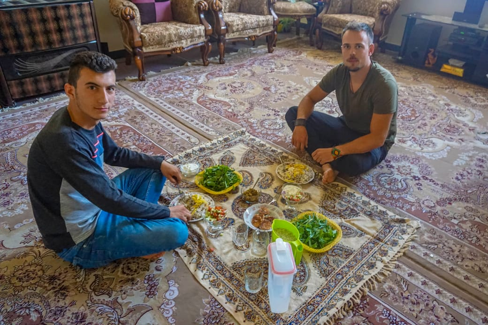

Nader and his mother
Nader, from Iran, studies french litterature and is well versed in the writings of Camus and Sartres. I met him when I was resting in an iranian tea house. He spoke to me in perfect french, although he had never been in France before. “Come to my house”, said Nader in french, “You can sleep there if you have no place to stay”.
His interests seem to make him a great candidate for discovering French culture. The reality, however, is crushingly different. Unlike me, his chances of pursuing his travel dream are either very slim or nonexistent. Why so? Let’s take a dip into the reality of his life and see what we can learn from it.
First, he is years away from earning enough money to travel there. He works two jobs on night time as a pizza deliverer and in a taxi call center from 6pm to 7am, besides attending university. That amounts to 13 hours work every night, seven days a week. His salary of $300 dollars a months go to pay his university, food, utilities – not to mention the financial support he offers to his parents. Second, the iranian government won’t let Nader leave the country before the end of his studies AND his mandatory 2 years of military service. Finally, he needs to prove the French government his wealth and firm work commitments at home – even rich iranians get rejected.
Nader still has the capacity of attending his french literature lectures every day after those two night shifts. “When do you sleep?”, I asked. “Whenever I can. I almost never sleep in a bed. It’s usually betwen calls at the call center. At the bus stop, or in the 1h bus ride to university.”
What are the perspectives of a young man like him? He works himself to the bone to pursue a passion that the world seemingly forbids him. In the last year and a half, he lost seventeen kilograms in body weight, probably from lack of sleep. He also lives under the eyes of a constantly watching islamic state in a fashion discomfortingly similar to George Orwell’s 1984. He spent three days in jail because he spent an afternoon talking to a girl in a park and her dad denounced the “crime” to the police. This helps us realize that many Iranians people suffer from – rather than identify with – their government.
Despite all this, Nader radiates hospitality and kindness. His smile seems to erase the marks left by the sleepless nights. In our first discussion, he invited me to stay at his home and his mother cooked dinner and lunch for us. I learned only after the fact that he had skipped a night’s work at the call center to be with me. When I asked where his father was, I learned that he had taken his son’s shift in the call center at his son’s request. This all happened behind the scenes, as no one tried to take credit for any of the sacrifices made to invite me in their home.

Eating lunch with Nader
What can we learn from this ? There’s a million things that are compelling in Nader’s situation. But i’m not here to tell you that the world is unjust – that would not be helping anyone. Nor is it my intention to take on the Iranian government. There’s certainly many ways how the government could improve the life of its citizens, but this state exists for reasons too complex for me to understand, let alone judge.
Much rather, I’d like to call upon revising what we can change : the standards by which we measure our comfort, our freedom, and our pain. The issue is not that w e lack compassion – most of the readers will understand the bitterness of Nader’s situation. The problem is that even though we read this article – in 10 minutes, an hour or at the latest tomorrow we will be fully absorbed again into our own worries and worldly problems. After all, this is a very human habit of our minds.
I call for striving to understand the problems of the people surrounding us. This might seem contradictory at first. After all, how does understanding other problems help me solve mine ? Let’s suppose for a moment that you are suffering from a terrible breakup. Your heart is wrecked, and you don’t see a way out of your misery. You might rightfully think that no one can help you – unless you turn it the other way around. The next day, you talk to the cleaning lady on the first floor of the office. You engage in a conversation really trying to understand her situation. You learn that she comes from a far distant country and barely makes the money to see her family once a year. She works twice as hard and has half your time for vacations. What’s more: she has a damaged self-esteem and not the social circle everyone else seems to have. By giving her your time, you give her the validation her soul was asking for. She leaves the discussion with a true smile, and you leave it recognizing how temporary your pain seems compared to her life situation.
Understanding other people creates the necessary link to help them before trying to help ourselves – an empowering and rewarding activity that pays back psychologically if not materially. Second, empathy is a way to situate your problems within the larger ones. Sometimes, the most effective way of relieving us from suffering is not to fight it, but to take a step back and see its insignificance. The saying “A problem can not be solved from the plane in which is has been formulated” does not just apply to physics.
I told Nader: “the challenges you face every day are much greater than the one I face in this journey”. Yet I get all the credit for travelling the world, while his fight goes completely unnoticed. People like him are the real and untold heroes of this world.